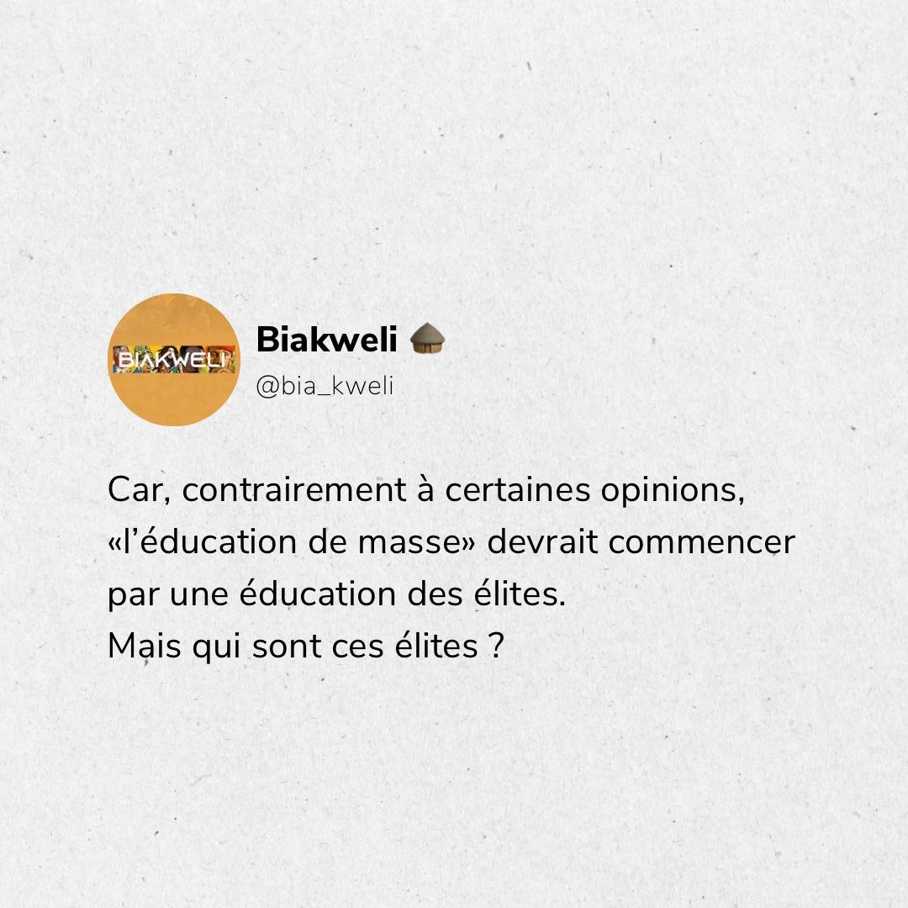

NOS PHOTOS
Bienvenue dans notre section "Nos Photos" ! Ici, nous partageons des images inspirantes et informatives qui mettent en lumière notre mission et nos activités. Notre objectif est de sensibiliser, d'informer et d'inspirer nos visiteurs à travers des contenus visuels variés.
Nous croyons que chaque photo est une opportunité de partager des idées, de susciter des discussions et de promouvoir le changement positif. N'hésitez pas à explorer nos images et à nous faire part de vos commentaires !
Nous sommes impatients de partager nos réflexions avec vous et de vous inviter à participer à la conversation. Merci de votre intérêt pour notre travail !
Citation de Mouammar Kadhafi

Ce post aborde la paix. Une citation provenant du grand Mouammar Kadhafi,un officier militaire, révolutionnaire, homme politique et théoricien politique libyen qui a dirigé la Libye de 1969 jusqu’à son assassinat par les forces rebelles libyennes en 2011.

Dans ce post, nous explorons l'importance de l'éducation pour le développement des jeunes élites Congolais.